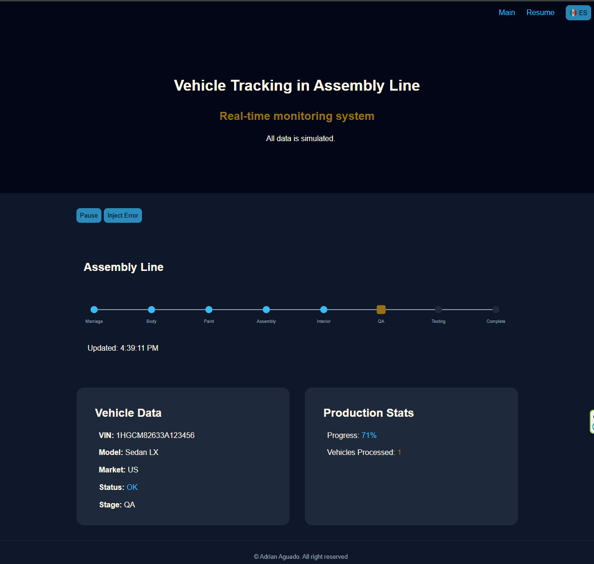

Industrial Monitoring Dashboard
Real-time production simulation with dynamic UI updates and SVG-based visualization.
View DemoBuilding real-time monitoring systems for data, and AI workflows
Download ResumeConstruyendo sistemas de monitoreo en tiempo real para datos, y flujos de trabajo para IA
Descargar CVFront-End Developer with 10+ years of experience building interactive web solutions, focused on real-time dashboards and data visualization systems.
I specialize in creating interfaces that transform complex data into clear, actionable insights, particularly in industrial and operational environments.
Recently, I have expanded my work into AI-powered workflows and generative tools, combining data, automation, app development, and user interfaces into cohesive systems.
Focused on building reliable, scalable, and user-centered interfaces.
Desarrollador Front-End con más de 10 años de experiencia creando soluciones web interactivas, enfocado en dashboards en tiempo real y sistemas de visualización de datos.
Me especializo en construir interfaces que transforman datos complejos en información clara y accionable, especialmente en entornos industriales y operativos.
Recientemente he ampliado mi trabajo con flujos de trabajo potenciados por IA y herramientas generativas, combinando datos, automatización e interfaces en sistemas integrados.
Enfocado en crear interfaces confiables, escalables y centradas en el usuario.

Real-time production simulation with dynamic UI updates and SVG-based visualization.
View DemoSimulación de una línea de producción en tiempo real con actualización dinámica de UI y visualización con gráficos SVG
Ver DemoDynamic language switching without page reload using only structured DOM control.
Semantic HTML with screen reader support and ARIA enhancements where needed. Features inclusive and keyboard-friendly navigation.
Built with vanilla JavaScript, focusing on lightweight, modular structure, and scalable design.
Mobile-first layout using Flexbox and Grid for adaptive interfaces and UI components.
Cambio dinámico de idioma sin recargar la página, utilizando únicamente control estructurado del DOM.
HTML semántico con soporte para lectores de pantalla y etiquetado ARIA cuando fue necesario. La navegación es inclusiva y accesible para el teclado.
Construido sólo con JavaScript, con enfoque en ligereza de líneas, estructura modular y diseño escalable.
Diseñado con un enfoque mobile-first, utilizando Flexbox y Grid para crear una interfaz y componentes UI adaptativos.
Developed interactive, real-time industrial monitoring dashboards using AngularJS and SVG for operational efficiency.
Built internal tools and control panels to streamline business operations and enhance workflow efficiency.
Desarrollo de dashboards interactivos de monitoreo industrial en tiempo real usando AngularJS y SVG para mejorar la eficiencia operativa.
Creación de herramientas internas y paneles de control para optimizar las operaciones del negocio y mejorar los flujos de trabajo.